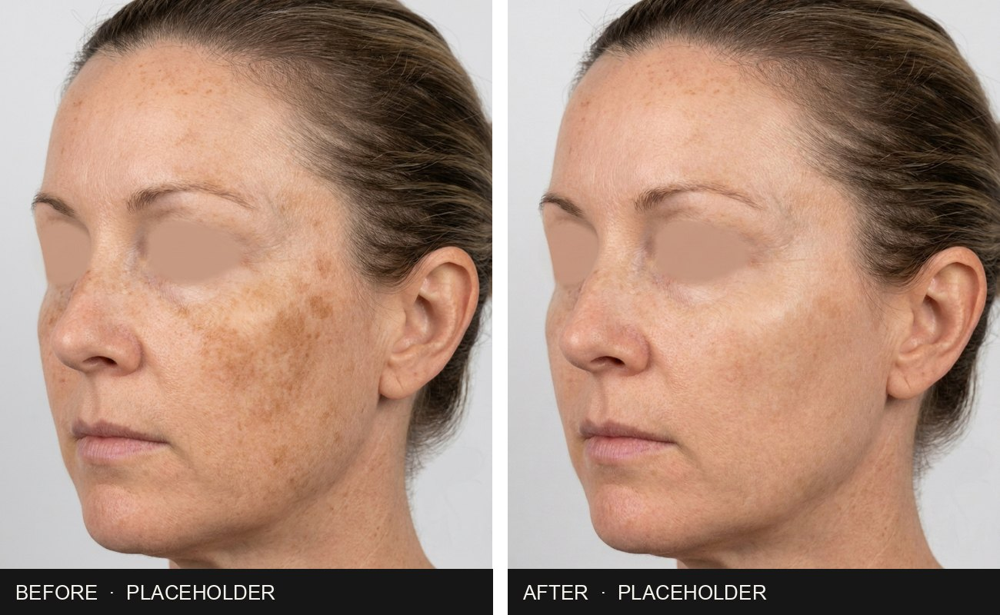
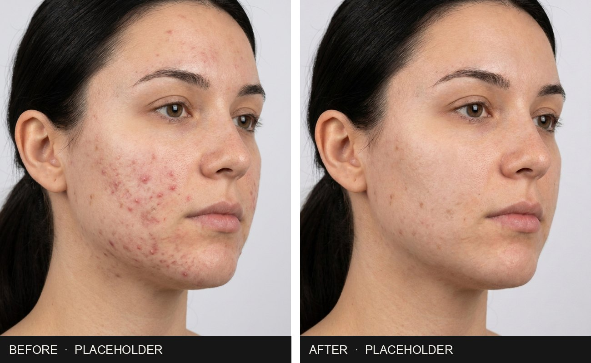
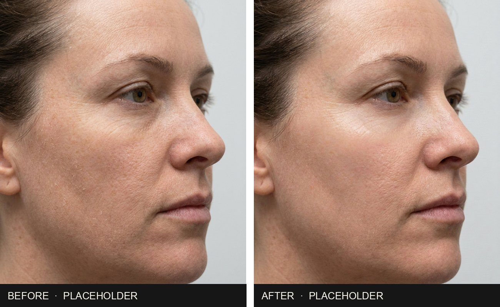
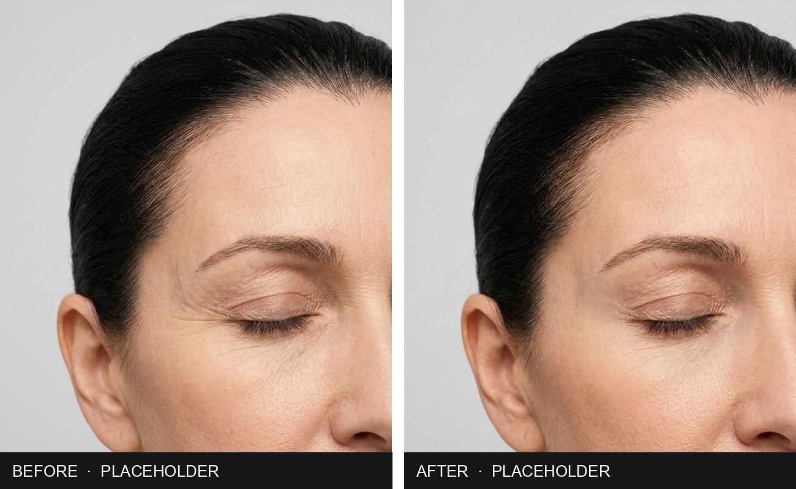

Every result here starts with the $249 consultation: Observ imaging, the plan on screen, then the treatments and homecare chosen for that skin. Skin treatment results can be shown openly. Results vary from person to person, and every plan starts with a consultation.
Placeholders. The four pairs below are generated stand-ins so you can see the format. They are replaced with The Aesthetic Advisory's own Observ before and afters, with each client's consent captured in the CRM, before anything goes live.
Pigmentation · placeholder
Sun-driven pigmentation, cheek

Pigment that had faded and returned every summer, imaged under UV, then treated for the type it was.
The plan: consultation, a staged course in clinic, daily SPF and a brightening homecare routine for site, progress photos on the Observ at each visit.
Acne and congestion · placeholder
Active breakouts, jaw and cheek

Breakouts that kept coming back. The cause was treated first, then the marks left behind.
The plan: consultation, a calming course in clinic, homecare that could survive a week on site, then Skin Club to hold it.
Dry and dehydrated · placeholder
Site skin, after the swing

Flaky, tight and dull after seven days on site. Dehydration lines visible under the Observ.
The plan: barrier repair in clinic early in the swing, LED, and a four-minute routine with three products for the donga.
Fine lines and ageing · placeholder
Outer eye and upper cheek

The first lines and crepey texture. Several small things, put in the right order.
The plan: consultation, a course of collagen-supporting treatment in clinic, homecare from the images, quarterly Observ review.